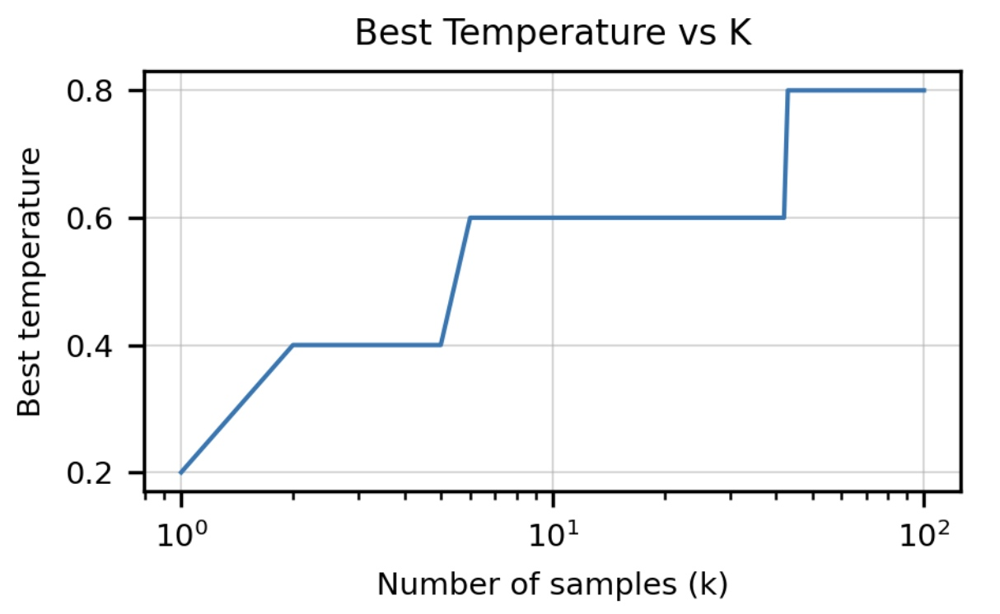

本文章是为了考察github上两个不同的库对微调后LLM的代码测评的效果的差异，比较对象为 bigcode-evaluation-harness 和DeepSeek-Coder。由于测评均支持多卡评测，因此考虑均在实验室的服务器上运行。
bigcode-evaluation-harness
Prepare
我们先安装相应的包，配置环境。
# 新建虚拟环境
conda create -n "CodeEval" python=3.7
# git
cd /home/workspace/nanyang
git clone https://github.com/bigcode-project/bigcode-evaluation-harness.git
# installation
cd /home/workspace/nanyang/bigcode-evaluation-harness
# 注：在这行该命令时，会自动安装 1.12.1 版本的 torch，但是需要卸载掉它，然后重新安装 1.12.1+cu116 版本的 torch。
/home/workspace/nanyang/anaconda3/envs/CodeEval/bin/pip install -e ".[ds1000]"
# uninstall torch
/home/workspace/nanyang/anaconda3/envs/CodeEval/bin/pip uninstall torch
# install pytorch
/home/workspace/nanyang/anaconda3/envs/CodeEval/bin/pip install torch==1.12.1+cu116 --extra-index-url https://download.pytorch.org/whl/cu116
# 查看安装的库
conda list
# packages in environment at /home/workspace/nanyang/anaconda3/CodeEval:
#
# Name Version Build Channel
_libgcc_mutex 0.1 conda_forge https://mirrors.tuna.tsinghua.edu.cn/anaconda/cloud/conda-forge
_openmp_mutex 4.5 2_kmp_llvm https://mirrors.tuna.tsinghua.edu.cn/anaconda/cloud/conda-forge
accelerate 0.30.0 <pip>
aiohttp 3.9.5 <pip>
aiosignal 1.3.1 <pip>
async-timeout 4.0.3 <pip>
attrs 23.2.0 <pip>
bigcode_eval 0.0.0 <pip>
ca-certificates 2024.3.11 h06a4308_0 https://mirrors.tuna.tsinghua.edu.cn/anaconda/pkgs/main
certifi 2024.2.2 <pip>
charset-normalizer 3.3.2 <pip>
datasets 2.19.1 <pip>
dill 0.3.8 <pip>
docopt 0.6.2 <pip>
evaluate 0.4.2 <pip>
filelock 3.14.0 <pip>
frozenlist 1.4.1 <pip>
fsspec 2023.9.2 <pip>
huggingface-hub 0.23.0 <pip>
idna 3.7 <pip>
Jinja2 3.1.4 <pip>
ld_impl_linux-64 2.38 h1181459_1 https://mirrors.tuna.tsinghua.edu.cn/anaconda/pkgs/main
libffi 3.4.4 h6a678d5_1 https://mirrors.tuna.tsinghua.edu.cn/anaconda/pkgs/main
libgcc-ng 12.2.0 h65d4601_19 https://mirrors.tuna.tsinghua.edu.cn/anaconda/cloud/conda-forge
libstdcxx-ng 12.2.0 h46fd767_19 https://mirrors.tuna.tsinghua.edu.cn/anaconda/cloud/conda-forge
llvm-openmp 14.0.6 h9e868ea_0 https://mirrors.tuna.tsinghua.edu.cn/anaconda/pkgs/main
MarkupSafe 2.1.5 <pip>
mosestokenizer 1.0.0 <pip>
mpmath 1.3.0 <pip>
multidict 6.0.5 <pip>
multiprocess 0.70.16 <pip>
ncurses 6.4 h6a678d5_0 https://mirrors.tuna.tsinghua.edu.cn/anaconda/pkgs/main
networkx 3.2.1 <pip>
numpy 1.26.4 <pip>
nvidia-cublas-cu12 12.1.3.1 <pip>
nvidia-cuda-cupti-cu12 12.1.105 <pip>
nvidia-cuda-nvrtc-cu12 12.1.105 <pip>
nvidia-cuda-runtime-cu12 12.1.105 <pip>
nvidia-cudnn-cu12 8.9.2.26 <pip>
nvidia-cufft-cu12 11.0.2.54 <pip>
nvidia-curand-cu12 10.3.2.106 <pip>
nvidia-cusolver-cu12 11.4.5.107 <pip>
nvidia-cusparse-cu12 12.1.0.106 <pip>
nvidia-nccl-cu12 2.19.3 <pip>
nvidia-nvjitlink-cu12 12.4.127 <pip>
nvidia-nvtx-cu12 12.1.105 <pip>
openfile 0.0.7 <pip>
openssl 3.0.13 h7f8727e_1 https://mirrors.tuna.tsinghua.edu.cn/anaconda/pkgs/main
packaging 24.0 <pip>
pandas 2.2.2 <pip>
pip 24.0 py39h06a4308_0 https://mirrors.tuna.tsinghua.edu.cn/anaconda/pkgs/main
psutil 5.9.8 <pip>
pyarrow 16.0.0 <pip>
pyarrow-hotfix 0.6 <pip>
pyext 0.7 <pip>
python 3.9.19 h955ad1f_1 https://mirrors.tuna.tsinghua.edu.cn/anaconda/pkgs/main
python-dateutil 2.9.0.post0 <pip>
pytz 2024.1 <pip>
PyYAML 6.0.1 <pip>
readline 8.2 h5eee18b_0 https://mirrors.tuna.tsinghua.edu.cn/anaconda/pkgs/main
regex 2024.5.10 <pip>
requests 2.31.0 <pip>
safetensors 0.4.3 <pip>
setuptools 69.5.1 py39h06a4308_0 https://mirrors.tuna.tsinghua.edu.cn/anaconda/pkgs/main
six 1.16.0 <pip>
sqlite 3.45.3 h5eee18b_0 https://mirrors.tuna.tsinghua.edu.cn/anaconda/pkgs/main
sympy 1.12 <pip>
tk 8.6.14 h39e8969_0 https://mirrors.tuna.tsinghua.edu.cn/anaconda/pkgs/main
tokenizers 0.19.1 <pip>
toolwrapper 2.1.0 <pip>
torch 2.2.1+cu121 <pip>
tqdm 4.66.4 <pip>
transformers 4.40.2 <pip>
triton 2.2.0 <pip>
typing_extensions 4.11.0 <pip>
tzdata 2024a h04d1e81_0 https://mirrors.tuna.tsinghua.edu.cn/anaconda/pkgs/main
tzdata 2024.1 <pip>
urllib3 2.2.1 <pip>
wheel 0.43.0 py39h06a4308_0 https://mirrors.tuna.tsinghua.edu.cn/anaconda/pkgs/main
xxhash 3.4.1 <pip>
xz 5.4.6 h5eee18b_1 https://mirrors.tuna.tsinghua.edu.cn/anaconda/pkgs/main
yarl 1.9.4 <pip>
zlib 1.2.13 h5eee18b_1 https://mirrors.tuna.tsinghua.edu.cn/anaconda/pkgs/main
Debug
我们首先配置accelerate config，得到default_config.yaml如下：
compute_environment: LOCAL_MACHINE
distributed_type: MULTI_GPU
downcast_bf16: 'no'
gpu_ids: '4,5,6,7'
machine_rank: 0
main_training_function: main
mixed_precision: 'no'
num_machines: 1
num_processes: 4
rdzv_backend: static
same_network: true
tpu_env: []
tpu_use_cluster: false
tpu_use_sudo: false
use_cpu: false
接着在基础的llama3-8b-base上进行实验，得到该模型在不同code评测下的指标。
accelerate launch main.py \
--model /home/share/nanyang/HuggingFace/.cache/huggingface/hub/models--Meta-Llama-3-8B/snapshots/1460c22666392e470910ce3d44ffeb2ab7dbd4df \
--tasks humaneval \
--max_length_generation 1024 \
--temperature 0.6 \
--do_sample True \
--n_samples 1 \
--batch_size 1 \
--precision bf16 \
--allow_code_execution \
--save_generations
然而却在加载本地模型时报错！！！！！！
2024-05-10 19:49:56.432777: I tensorflow/core/platform/cpu_feature_guard.cc:193] This TensorFlow binary is optimized with oneAPI Deep Neural Network Library (oneDNN) to use the following CPU instructions in performance-critical operations: AVX2 FMA
To enable them in other operations, rebuild TensorFlow with the appropriate compiler flags.
2024-05-10 19:49:56.598499: E tensorflow/stream_executor/cuda/cuda_blas.cc:2981] Unable to register cuBLAS factory: Attempting to register factory for plugin cuBLAS when one has already been registered
2024-05-10 19:49:57.446740: W tensorflow/stream_executor/platform/default/dso_loader.cc:64] Could not load dynamic library 'libnvinfer.so.7'; dlerror: libnvinfer.so.7: cannot open shared object file: No such file or directory
2024-05-10 19:49:57.446849: W tensorflow/stream_executor/platform/default/dso_loader.cc:64] Could not load dynamic library 'libnvinfer_plugin.so.7'; dlerror: libnvinfer_plugin.so.7: cannot open shared object file: No such file or directory
2024-05-10 19:49:57.446862: W tensorflow/compiler/tf2tensorrt/utils/py_utils.cc:38] TF-TRT Warning: Cannot dlopen some TensorRT libraries. If you would like to use Nvidia GPU with TensorRT, please make sure the missing libraries mentioned above are installed properly.
Loading model in bf16
Selected Tasks: ['humaneval']
Loading checkpoint shards: 100%|███████████████████████████████| 4/4 [00:06<00:00, 1.61s/it]
Traceback (most recent call last):
File "main.py", line 414, in <module>
main()
File "main.py", line 296, in main
**model_kwargs,
File "/home/workspace/nanyang/anaconda3/envs/CodeEval/lib/python3.7/site-packages/transformers/models/auto/auto_factory.py", line 485, in from_pretrained
pretrained_model_name_or_path, *model_args, config=config, **hub_kwargs, **kwargs
File "/home/workspace/nanyang/anaconda3/envs/CodeEval/lib/python3.7/site-packages/transformers/modeling_utils.py", line 2896, in from_pretrained
keep_in_fp32_modules=keep_in_fp32_modules,
File "/home/workspace/nanyang/anaconda3/envs/CodeEval/lib/python3.7/site-packages/transformers/modeling_utils.py", line 3278, in _load_pretrained_model
raise RuntimeError(f"Error(s) in loading state_dict for {model.__class__.__name__}:\n\t{error_msg}")
RuntimeError: Error(s) in loading state_dict for LlamaForCausalLM:
size mismatch for model.layers.0.self_attn.k_proj.weight: copying a param with shape torch.Size([1024, 4096]) from checkpoint, the shape in current model is torch.Size([4096, 4096]).
size mismatch for model.layers.1.self_attn.k_proj.weight: copying a param with shape torch.Size([1024, 4096]) from checkpoint, the shape in current model is torch.Size([4096, 4096]).
size mismatch for model.layers.2.self_attn.v_proj.weight: copying a param with shape torch.Size([1024, 4096]) from checkpoint, the shape in current model is torch.Size([4096, 4096]).
size mismatch for model.layers.3.self_attn.k_proj.weight: copying a param with shape torch.Size([1024, 4096]) from checkpoint, the shape in current model is torch.Size([4096, 4096]).
size mismatch for model.layers.4.self_attn.v_proj.weight: copying a param with shape torch.Size([1024, 4096]) from checkpoint, the shape in current model is torch.Size([4096, 4096]).
size mismatch for model.layers.5.self_attn.k_proj.weight: copying a param with shape torch.Size([1024, 4096]) from checkpoint, the shape in current model is torch.Size([4096, 4096]).
size mismatch for model.layers.6.self_attn.v_proj.weight: copying a param with shape torch.Size([1024, 4096]) from checkpoint, the shape in current model is torch.Size([4096, 4096]).
size mismatch for model.layers.7.self_attn.k_proj.weight: copying a param with shape torch.Size([1024, 4096]) from checkpoint, the shape in current model is torch.Size([4096, 4096]).
size mismatch for model.layers.8.self_attn.v_proj.weight: copying a param with shape torch.Size([1024, 4096]) from checkpoint, the shape in current model is torch.Size([4096, 4096]).
size mismatch for model.layers.9.self_attn.k_proj.weight: copying a param with shape torch.Size([1024,
size mismatch for model.layers.10.self_attn.k_proj.weight: copying a param with shape torch.Size([1024, 4096]) from checkpoint, the shape in current model is torch.Size([4096, 4096]).
size mismatch for model.layers.11.self_attn.k_proj.weight: copying a param with shape torch.Size([1024, 4096]) from checkpoint, the shape in current model is torch.Size([4096, 4096]).
size mismatch for model.layers.12.self_attn.k_proj.weight: copying a param with shape torch.Size([1024, 4096]) from checkpoint, the shape in current model is torch.Size([4096, 4096]).
size mismatch for model.layers.13.self_attn.k_proj.weight: copying a param with shape torch.Size([1024, 4096]) from checkpoint, the shape in current model is torch.Size([4096, 4096]).
size mismatch for model.layers.14.self_attn.k_proj.weight: copying a param with shape torch.Size([1024, 4096]) from checkpoint, the shape in current model is torch.Size([4096, 4096]).
size mismatch for model.layers.15.self_attn.k_proj.weight: copying a param with shape torch.Size([1024, 4096]) from checkpoint, the shape in current model is torch.Size([4096, 4096]).
size mismatch for model.layers.16.self_attn.k_proj.weight: copying a param with shape torch.Size([1024, 4096]) from checkpoint, the shape in current model is torch.Size([4096, 4096]).
size mismatch for model.layers.17.self_attn.k_proj.weight: copying a param with shape torch.Size([1024, 4096]) from checkpoint, the shape in current model is torch.Size([4096, 4096]).
size mismatch for model.layers.18.self_attn.k_proj.weight: copying a param with shape torch.Size([1024, 4096]) from checkpoint, the shape in current model is torch.Size([4096, 4096]).
size mismatch for model.layers.19.self_attn.k_proj.weight: copying a param with shape torch.Size([1024, 4096]) from checkpoint, the shape in current model is torch.Size([4096, 4096]).
size mismatch for model.layers.20.self_attn.k_proj.weight: copying a param with shape torch.Size([1024, 4096]) from checkpoint, the shape in current model is torch.Size([4096, 4096]).
size mismatch for model.layers.21.self_attn.k_proj.weight: copying a param with shape torch.Size([1024, 4096]) from checkpoint, the shape in current model is torch.Size([4096, 4096]).
size mismatch for model.layers.22.self_attn.k_proj.weight: copying a param with shape torch.Size([1024, 4096]) from checkpoint, the shape in current model is torch.Size([4096, 4096]).
size mismatch for model.layers.23.self_attn.k_proj.weight: copying a param with shape torch.Size([1024, 4096]) from checkpoint, the shape in current model is torch.Size([4096, 4096]).
size mismatch for model.layers.24.self_attn.k_proj.weight: copying a param with shape torch.Size([1024, 4096]) from checkpoint, the shape in current model is torch.Size([4096, 4096]).
size mismatch for model.layers.25.self_attn.k_proj.weight: copying a param with shape torch.Size([1024, 4096]) from checkpoint, the shape in current model is torch.Size([4096, 4096]).
size mismatch for model.layers.26.self_attn.k_proj.weight: copying a param with shape torch.Size([1024, 4096]) from checkpoint, the shape in current model is torch.Size([4096, 4096]).
size mismatch for model.layers.27.self_attn.k_proj.weight: copying a param with shape torch.Size([1024, 4096]) from checkpoint, the shape in current model is torch.Size([4096, 4096]).
size mismatch for model.layers.28.self_attn.k_proj.weight: copying a param with shape torch.Size([1024, 4096]) from checkpoint, the shape in current model is torch.Size([4096, 4096]).
size mismatch for model.layers.29.self_attn.k_proj.weight: copying a param with shape torch.Size([1024, 4096]) from checkpoint, the shape in current model is torch.Size([4096, 4096]).
size mismatch for model.layers.30.self_attn.k_proj.weight: copying a param with shape torch.Size([1024, 4096]) from checkpoint, the shape in current model is torch.Size([4096, 4096]).
size mismatch for model.layers.31.self_attn.k_proj.weight: copying a param with shape torch.Size([1024, 4096]) from checkpoint, the shape in current model is torch.Size([4096, 4096]).
You may consider adding `ignore_mismatched_sizes=True` in the model `from_pretrained` method.
可以看到，在加载模型时，对于模型中每一层，其K、V的size均loading出错。
在查找了将近一个下午的资料后，仍然没有得到什么好结果，于是想着采用控制变量法试试：
- 首先是在
reft虚拟环境中，也即进行微调的虚拟环境中：
$ python
Python 3.9.19 (main, Mar 21 2024, 17:11:28)
[GCC 11.2.0] :: Anaconda, Inc. on linux
Type "help", "copyright", "credits" or "license" for more information.
>>> import os
>>> os.environ['CUDA_VISIBLE_DEVICES']='1'
>>> os.environ['TOKENIZERS_PARALLELISM']='false'
>>> import torch
>>> from transformers import AutoModelForCausalLM
>>> model = AutoModelForCausalLM.from_pretrained('/home/share/nanyang/HuggingFace/.cache/huggingface/hub/models--Meta-Llama-3-8B/snapshots/1460c22666392e470910ce3d44ffeb2ab7dbd4df')
Loading checkpoint shards: 100%|██████████████████████████████████████████████████████████████| 4/4 [00:02<00:00, 1.59it/s]
>>> exit()
可以看到模型被成功的加载了出来！
- 接着是在
CodeEval环境中，也即将来进行指标评测的虚拟环境中：
$ python
Python 3.7.16 (default, Jan 17 2023, 22:20:44)
[GCC 11.2.0] :: Anaconda, Inc. on linux
Type "help", "copyright", "credits" or "license" for more information.
>>> import os
>>> os.environ['CUDA_VISIBLE_DEVICES']='1'
>>> os.environ['TOKENIZERS_PARALLELISM']='false'
>>> import torch
>>> from transformers import AutoModelForCausalLM
>>> model = AutoModelForCausalLM.from_pretrained('/home/share/nanyang/HuggingFace/.cache/huggingface/hub/models--Meta-Llama-3-8B/snapshots/1460c22666392e470910ce3d44ffeb2ab7dbd4df')
Loading checkpoint shards: 100%|██████████████████████████████████████████████████████████████| 4/4 [00:02<00:00, 1.83it/s]
Traceback (most recent call last):
File "<stdin>", line 1, in <module>
File "/home/workspace/nanyang/anaconda3/envs/CodeEval/lib/python3.7/site-packages/transformers/models/auto/auto_factory.py", line 485, in from_pretrained
pretrained_model_name_or_path, *model_args, config=config, **hub_kwargs, **kwargs
File "/home/workspace/nanyang/anaconda3/envs/CodeEval/lib/python3.7/site-packages/transformers/modeling_utils.py", line 2896, in from_pretrained
keep_in_fp32_modules=keep_in_fp32_modules,
File "/home/workspace/nanyang/anaconda3/envs/CodeEval/lib/python3.7/site-packages/transformers/modeling_utils.py", line 3278, in _load_pretrained_model
raise RuntimeError(f"Error(s) in loading state_dict for {model.__class__.__name__}:\n\t{error_msg}")
RuntimeError: Error(s) in loading state_dict for LlamaForCausalLM:
size mismatch for model.layers.0.self_attn.k_proj.weight: copying a param with shape torch.Size([1024, 4096]) from checkpoint, the shape in current model is torch.Size([4096, 4096]).
size mismatch for model.layers.0.self_attn.v_proj.weight: copying a param with shape torch.Size([1024, 4096]) from checkpoint, the shape in current model is torch.Size([4096, 4096]).
size mismatch for model.layers.1.self_attn.k_proj.weight: copying a param with shape torch.Size([1024, 4096]) from checkpoint, the shape in current model is torch.Size([4096, 4096]).
size mismatch for model.layers.1.self_attn.v_proj.weight: copying a param with shape torch.Size([1024, 4096]) from checkpoint, the shape in current model is torch.Size([4096, 4096]).
size mismatch for model.layers.2.self_attn.k_proj.weight: copying a param with shape torch.Size([1024, 4096]) from checkpoint, the shape in current model is torch.Size([4096, 4096]).
size mismatch for model.layers.2.self_attn.v_proj.weight: copying a param with shape torch.Size([1024, 4096]) from checkpoint, the shape in current model is torch.Size([4096, 4096]).
size mismatch for model.layers.3.self_attn.k_proj.weight: copying a param with shape torch.Size([1024, 4096]) from checkpoint, the shape in current model is torch.Size([4096, 4096]).
size mismatch for model.layers.3.self_attn.v_proj.weight: copying a param with shape torch.Size([1024, 4096]) from checkpoint, the shape in current model is torch.Size([4096, 4096]).
size mismatch for model.layers.4.self_attn.k_proj.weight: copying a param with shape torch.Size([1024, 4096]) from checkpoint, the shape in current model is torch.Size([4096, 4096]).
size mismatch for model.layers.4.self_attn.v_proj.weight: copying a param with shape torch.Size([1024, 4096]) from checkpoint, the shape in current model is torch.Size([4096, 4096]).
size mismatch for model.layers.5.self_attn.k_proj.weight: copying a param with shape torch.Size([1024, 4096]) from checkpoint, the shape in current model is torch.Size([4096, 4096]).
size mismatch for model.layers.5.self_attn.v_proj.weight: copying a param with shape torch.Size([1024, 4096]) from checkpoint, the shape in current model is torch.Size([4096, 4096]).
size mismatch for model.layers.6.self_attn.k_proj.weight: copying a param with shape torch.Size([1024, 4096]) from checkpoint, the shape in current model is torch.Size([4096, 4096]).
size mismatch for model.layers.6.self_attn.v_proj.weight: copying a param with shape torch.Size([1024, 4096]) from checkpoint, the shape in current model is torch.Size([4096, 4096]).
size mismatch for model.layers.7.self_attn.k_proj.weight: copying a param with shape torch.Size([1024, 4096]) from checkpoint, the shape in current model is torch.Size([4096, 4096]).
size mismatch for model.layers.7.self_attn.v_proj.weight: copying a param with shape torch.Size([1024, 4096]) from checkpoint, the shape in current model is torch.Size([4096, 4096]).
size mismatch for model.layers.8.self_attn.k_proj.weight: copying a param with shape torch.Size([1024, 4096]) from checkpoint, the shape in current model is torch.Size([4096, 4096]).
size mismatch for model.layers.8.self_attn.v_proj.weight: copying a param with shape torch.Size([1024, 4096]) from checkpoint, the shape in current model is torch.Size([4096, 4096]).
size mismatch for model.layers.9.self_attn.k_proj.weight: copying a param with shape torch.Size([1024, 4096]) from checkpoint, the shape in current model is torch.Size([4096, 4096]).
size mismatch for model.layers.9.self_attn.v_proj.weight: copying a param with shape torch.Size([1024, 4096]) from checkpoint, the shape in current model is torch.Size([4096, 4096]).
size mismatch for model.layers.10.self_attn.k_proj.weight: copying a param with shape torch.Size([1024, 4096]) from checkpoint, the shape in current model is torch.Size([4096, 4096]).
size mismatch for model.layers.10.self_attn.v_proj.weight: copying a param with shape torch.Size([1024, 4096]) from checkpoint, the shape in current model is torch.Size([4096, 4096]).
size mismatch for model.layers.11.self_attn.k_proj.weight: copying a param with shape torch.Size([1024, 4096]) from checkpoint, the shape in current model is torch.Size([4096, 4096]).
size mismatch for model.layers.11.self_attn.v_proj.weight: copying a param with shape torch.Size([1024, 4096]) from checkpoint, the shape in current model is torch.Size([4096, 4096]).
size mismatch for model.layers.12.self_attn.k_proj.weight: copying a param with shape torch.Size([1024, 4096]) from checkpoint, the shape in current model is torch.Size([4096, 4096]).
size mismatch for model.layers.12.self_attn.v_proj.weight: copying a param with shape torch.Size([1024, 4096]) from checkpoint, the shape in current model is torch.Size([4096, 4096]).
size mismatch for model.layers.13.self_attn.k_proj.weight: copying a param with shape torch.Size([1024, 4096]) from checkpoint, the shape in current model is torch.Size([4096, 4096]).
size mismatch for model.layers.13.self_attn.v_proj.weight: copying a param with shape torch.Size([1024, 4096]) from checkpoint, the shape in current model is torch.Size([4096, 4096]).
size mismatch for model.layers.14.self_attn.k_proj.weight: copying a param with shape torch.Size([1024, 4096]) from checkpoint, the shape in current model is torch.Size([4096, 4096]).
size mismatch for model.layers.14.self_attn.v_proj.weight: copying a param with shape torch.Size([1024, 4096]) from checkpoint, the shape in current model is torch.Size([4096, 4096]).
size mismatch for model.layers.15.self_attn.k_proj.weight: copying a param with shape torch.Size([1024, 4096]) from checkpoint, the shape in current model is torch.Size([4096, 4096]).
size mismatch for model.layers.15.self_attn.v_proj.weight: copying a param with shape torch.Size([1024, 4096]) from checkpoint, the shape in current model is torch.Size([4096, 4096]).
size mismatch for model.layers.16.self_attn.k_proj.weight: copying a param with shape torch.Size([1024, 4096]) from checkpoint, the shape in current model is torch.Size([4096, 4096]).
size mismatch for model.layers.16.self_attn.v_proj.weight: copying a param with shape torch.Size([1024, 4096]) from checkpoint, the shape in current model is torch.Size([4096, 4096]).
size mismatch for model.layers.17.self_attn.k_proj.weight: copying a param with shape torch.Size([1024, 4096]) from checkpoint, the shape in current model is torch.Size([4096, 4096]).
size mismatch for model.layers.17.self_attn.v_proj.weight: copying a param with shape torch.Size([1024, 4096]) from checkpoint, the shape in current model is torch.Size([4096, 4096]).
size mismatch for model.layers.18.self_attn.k_proj.weight: copying a param with shape torch.Size([1024, 4096]) from checkpoint, the shape in current model is torch.Size([4096, 4096]).
size mismatch for model.layers.18.self_attn.v_proj.weight: copying a param with shape torch.Size([1024, 4096]) from checkpoint, the shape in current model is torch.Size([4096, 4096]).
size mismatch for model.layers.19.self_attn.k_proj.weight: copying a param with shape torch.Size([1024, 4096]) from checkpoint, the shape in current model is torch.Size([4096, 4096]).
size mismatch for model.layers.19.self_attn.v_proj.weight: copying a param with shape torch.Size([1024, 4096]) from checkpoint, the shape in current model is torch.Size([4096, 4096]).
size mismatch for model.layers.20.self_attn.k_proj.weight: copying a param with shape torch.Size([1024, 4096]) from checkpoint, the shape in current model is torch.Size([4096, 4096]).
size mismatch for model.layers.20.self_attn.v_proj.weight: copying a param with shape torch.Size([1024, 4096]) from checkpoint, the shape in current model is torch.Size([4096, 4096]).
size mismatch for model.layers.21.self_attn.k_proj.weight: copying a param with shape torch.Size([1024, 4096]) from checkpoint, the shape in current model is torch.Size([4096, 4096]).
size mismatch for model.layers.21.self_attn.v_proj.weight: copying a param with shape torch.Size([1024, 4096]) from checkpoint, the shape in current model is torch.Size([4096, 4096]).
size mismatch for model.layers.22.self_attn.k_proj.weight: copying a param with shape torch.Size([1024, 4096]) from checkpoint, the shape in current model is torch.Size([4096, 4096]).
size mismatch for model.layers.22.self_attn.v_proj.weight: copying a param with shape torch.Size([1024, 4096]) from checkpoint, the shape in current model is torch.Size([4096, 4096]).
size mismatch for model.layers.23.self_attn.k_proj.weight: copying a param with shape torch.Size([1024, 4096]) from checkpoint, the shape in current model is torch.Size([4096, 4096]).
size mismatch for model.layers.23.self_attn.v_proj.weight: copying a param with shape torch.Size([1024, 4096]) from checkpoint, the shape in current model is torch.Size([4096, 4096]).
size mismatch for model.layers.24.self_attn.k_proj.weight: copying a param with shape torch.Size([1024, 4096]) from checkpoint, the shape in current model is torch.Size([4096, 4096]).
size mismatch for model.layers.24.self_attn.v_proj.weight: copying a param with shape torch.Size([1024, 4096]) from checkpoint, the shape in current model is torch.Size([4096, 4096]).
size mismatch for model.layers.25.self_attn.k_proj.weight: copying a param with shape torch.Size([1024, 4096]) from checkpoint, the shape in current model is torch.Size([4096, 4096]).
size mismatch for model.layers.25.self_attn.v_proj.weight: copying a param with shape torch.Size([1024, 4096]) from checkpoint, the shape in current model is torch.Size([4096, 4096]).
size mismatch for model.layers.26.self_attn.k_proj.weight: copying a param with shape torch.Size([1024, 4096]) from checkpoint, the shape in current model is torch.Size([4096, 4096]).
size mismatch for model.layers.26.self_attn.v_proj.weight: copying a param with shape torch.Size([1024, 4096]) from checkpoint, the shape in current model is torch.Size([4096, 4096]).
size mismatch for model.layers.27.self_attn.k_proj.weight: copying a param with shape torch.Size([1024, 4096]) from checkpoint, the shape in current model is torch.Size([4096, 4096]).
size mismatch for model.layers.27.self_attn.v_proj.weight: copying a param with shape torch.Size([1024, 4096]) from checkpoint, the shape in current model is torch.Size([4096, 4096]).
size mismatch for model.layers.28.self_attn.k_proj.weight: copying a param with shape torch.Size([1024, 4096]) from checkpoint, the shape in current model is torch.Size([4096, 4096]).
size mismatch for model.layers.28.self_attn.v_proj.weight: copying a param with shape torch.Size([1024, 4096]) from checkpoint, the shape in current model is torch.Size([4096, 4096]).
size mismatch for model.layers.29.self_attn.k_proj.weight: copying a param with shape torch.Size([1024, 4096]) from checkpoint, the shape in current model is torch.Size([4096, 4096]).
size mismatch for model.layers.29.self_attn.v_proj.weight: copying a param with shape torch.Size([1024, 4096]) from checkpoint, the shape in current model is torch.Size([4096, 4096]).
size mismatch for model.layers.30.self_attn.k_proj.weight: copying a param with shape torch.Size([1024, 4096]) from checkpoint, the shape in current model is torch.Size([4096, 4096]).
size mismatch for model.layers.30.self_attn.v_proj.weight: copying a param with shape torch.Size([1024, 4096]) from checkpoint, the shape in current model is torch.Size([4096, 4096]).
size mismatch for model.layers.31.self_attn.k_proj.weight: copying a param with shape torch.Size([1024, 4096]) from checkpoint, the shape in current model is torch.Size([4096, 4096]).
size mismatch for model.layers.31.self_attn.v_proj.weight: copying a param with shape torch.Size([1024, 4096]) from checkpoint, the shape in current model is torch.Size([4096, 4096]).
You may consider adding `ignore_mismatched_sizes=True` in the model `from_pretrained` method.
>>> exit()
到这一步基本可以确定问题：进行评测的虚拟环境中的transformers包的版本不对，无法解析当前的模型。 观察CodeEval虚拟环境中transofrmers版本为：
transformers 4.30.2 pypi_0 pypi
而LoReFT虚拟环境中transofrmers版本为：
transformers 4.40.1 <pip>
因此我们将CodeEval虚拟环境中原先的transofrmers卸载，更新为4.40.1版本的transformers：
# uninstall
/home/workspace/nanyang/anaconda3/envs/CodeEval/bin/pip uninstall transformers
# install
/home/workspace/nanyang/anaconda3/envs/CodeEval/bin/pip install transformers==4.40.1
ERROR: Ignored the following versions that require a different python version: 4.31.0 Requires-Python >=3.8.0; 4.32.0 Requires-Python >=3.8.0; 4.32.1 Requires-Python >=3.8.0; 4.33.0 Requires-Python >=3.8.0; 4.33.1 Requires-Python >=3.8.0; 4.33.2 Requires-Python >=3.8.0; 4.33.3 Requires-Python >=3.8.0; 4.34.0 Requires-Python >=3.8.0; 4.34.1 Requires-Python >=3.8.0; 4.35.0 Requires-Python >=3.8.0; 4.35.1 Requires-Python >=3.8.0; 4.35.2 Requires-Python >=3.8.0; 4.36.0 Requires-Python >=3.8.0; 4.36.1 Requires-Python >=3.8.0; 4.36.2 Requires-Python >=3.8.0; 4.37.0 Requires-Python >=3.8.0; 4.37.1 Requires-Python >=3.8.0; 4.37.2 Requires-Python >=3.8.0; 4.38.0 Requires-Python >=3.8.0; 4.38.1 Requires-Python >=3.8.0; 4.38.2 Requires-Python >=3.8.0; 4.39.0 Requires-Python >=3.8.0; 4.39.1 Requires-Python >=3.8.0; 4.39.2 Requires-Python >=3.8.0; 4.39.3 Requires-Python >=3.8.0; 4.40.0 Requires-Python >=3.8.0; 4.40.1 Requires-Python >=3.8.0; 4.40.2 Requires-Python >=3.8.0
ERROR: Could not find a version that satisfies the requirement transformers==4.40.1 (from versions: 0.1, 2.0.0, 2.1.0, 2.1.1, 2.2.0, 2.2.1, 2.2.2, 2.3.0, 2.4.0, 2.4.1, 2.5.0, 2.5.1, 2.6.0, 2.7.0, 2.8.0, 2.9.0, 2.9.1, 2.10.0, 2.11.0, 3.0.0, 3.0.1, 3.0.2, 3.1.0, 3.2.0, 3.3.0, 3.3.1, 3.4.0, 3.5.0, 3.5.1, 4.0.0rc1, 4.0.0, 4.0.1, 4.1.0, 4.1.1, 4.2.0, 4.2.1, 4.2.2, 4.3.0rc1, 4.3.0, 4.3.1, 4.3.2, 4.3.3, 4.4.0, 4.4.1, 4.4.2, 4.5.0, 4.5.1, 4.6.0, 4.6.1, 4.7.0, 4.8.0, 4.8.1, 4.8.2, 4.9.0, 4.9.1, 4.9.2, 4.10.0, 4.10.1, 4.10.2, 4.10.3, 4.11.0, 4.11.1, 4.11.2, 4.11.3, 4.12.0, 4.12.1, 4.12.2, 4.12.3, 4.12.4, 4.12.5, 4.13.0, 4.14.0, 4.14.1, 4.15.0, 4.16.0, 4.16.1, 4.16.2, 4.17.0, 4.18.0, 4.19.0, 4.19.1, 4.19.2, 4.19.3, 4.19.4, 4.20.0, 4.20.1, 4.21.0, 4.21.1, 4.21.2, 4.21.3, 4.22.0, 4.22.1, 4.22.2, 4.23.0, 4.23.1, 4.24.0, 4.25.0, 4.25.1, 4.26.0, 4.26.1, 4.27.0, 4.27.1, 4.27.2, 4.27.3, 4.27.4, 4.28.0, 4.28.1, 4.29.0, 4.29.1, 4.29.2, 4.30.0, 4.30.1, 4.30.2)
ERROR: No matching distribution found for transformers==4.40.1
然而却报错：由于python==3.7最高只支持transformers==4.30.2的版本。思考由于DS-1000评测也不是那么必要（只有DS-1000需要python==3.7），因此考虑重新装一个python>=3.8的虚拟环境。
# 退出当前虚拟环境
conda deactivate CodeEval
# 删除该环境
conda remove -n CodeEval --all
# 新建虚拟环境
conda create -n "reft-code-eval" python=3.9
# 安装依赖
conda activate reft-code-eval
cd /home/workspace/nanyang/bigcode-evaluation-harness
/home/workspace/nanyang/anaconda3/envs/LoReFT-Code-Eval/bin/pip install -e .
/home/workspace/nanyang/anaconda3/envs/LoReFT-Code-Eval/bin/pip uninstall torch
/home/workspace/nanyang/anaconda3/envs/LoReFT-Code-Eval/bin/pip install torch==2.1.1 --index-url https://download.pytorch.org/whl/cu121
# 查看安装的库
conda list
# packages in environment at /root/miniconda3/envs/LoReFT-Code-Eval:
#
# Name Version Build Channel
_libgcc_mutex 0.1 main https://mirrors.tuna.tsinghua.edu.cn/anaconda/pkgs/main
_openmp_mutex 5.1 1_gnu https://mirrors.tuna.tsinghua.edu.cn/anaconda/pkgs/main
accelerate 0.30.0 pypi_0 pypi
aiohttp 3.9.5 pypi_0 pypi
aiosignal 1.3.1 pypi_0 pypi
async-timeout 4.0.3 pypi_0 pypi
attrs 23.2.0 pypi_0 pypi
bigcode-eval 0.0.0 dev_0 <develop>
ca-certificates 2024.3.11 h06a4308_0 https://mirrors.tuna.tsinghua.edu.cn/anaconda/pkgs/main
certifi 2024.2.2 pypi_0 pypi
charset-normalizer 3.3.2 pypi_0 pypi
datasets 2.19.1 pypi_0 pypi
dill 0.3.8 pypi_0 pypi
docopt 0.6.2 pypi_0 pypi
evaluate 0.4.2 pypi_0 pypi
filelock 3.14.0 pypi_0 pypi
frozenlist 1.4.1 pypi_0 pypi
fsspec 2023.9.2 pypi_0 pypi
huggingface-hub 0.23.0 pypi_0 pypi
idna 3.7 pypi_0 pypi
jinja2 3.1.4 pypi_0 pypi
ld_impl_linux-64 2.38 h1181459_1 https://mirrors.tuna.tsinghua.edu.cn/anaconda/pkgs/main
libffi 3.4.4 h6a678d5_1 https://mirrors.tuna.tsinghua.edu.cn/anaconda/pkgs/main
libgcc-ng 11.2.0 h1234567_1 https://mirrors.tuna.tsinghua.edu.cn/anaconda/pkgs/main
libgomp 11.2.0 h1234567_1 https://mirrors.tuna.tsinghua.edu.cn/anaconda/pkgs/main
libstdcxx-ng 11.2.0 h1234567_1 https://mirrors.tuna.tsinghua.edu.cn/anaconda/pkgs/main
markupsafe 2.1.5 pypi_0 pypi
mosestokenizer 1.0.0 pypi_0 pypi
mpmath 1.3.0 pypi_0 pypi
multidict 6.0.5 pypi_0 pypi
multiprocess 0.70.16 pypi_0 pypi
ncurses 6.4 h6a678d5_0 https://mirrors.tuna.tsinghua.edu.cn/anaconda/pkgs/main
networkx 3.2.1 pypi_0 pypi
numpy 1.26.4 pypi_0 pypi
nvidia-cublas-cu12 12.1.3.1 pypi_0 pypi
nvidia-cuda-cupti-cu12 12.1.105 pypi_0 pypi
nvidia-cuda-nvrtc-cu12 12.1.105 pypi_0 pypi
nvidia-cuda-runtime-cu12 12.1.105 pypi_0 pypi
nvidia-cudnn-cu12 8.9.2.26 pypi_0 pypi
nvidia-cufft-cu12 11.0.2.54 pypi_0 pypi
nvidia-curand-cu12 10.3.2.106 pypi_0 pypi
nvidia-cusolver-cu12 11.4.5.107 pypi_0 pypi
nvidia-cusparse-cu12 12.1.0.106 pypi_0 pypi
nvidia-nccl-cu12 2.20.5 pypi_0 pypi
nvidia-nvjitlink-cu12 12.4.127 pypi_0 pypi
nvidia-nvtx-cu12 12.1.105 pypi_0 pypi
openfile 0.0.7 pypi_0 pypi
openssl 3.0.13 h7f8727e_1 https://mirrors.tuna.tsinghua.edu.cn/anaconda/pkgs/main
packaging 24.0 pypi_0 pypi
pandas 2.2.2 pypi_0 pypi
pip 24.0 py39h06a4308_0 https://mirrors.tuna.tsinghua.edu.cn/anaconda/pkgs/main
psutil 5.9.8 pypi_0 pypi
pyarrow 16.0.0 pypi_0 pypi
pyarrow-hotfix 0.6 pypi_0 pypi
pyext 0.7 pypi_0 pypi
python 3.9.19 h955ad1f_1 https://mirrors.tuna.tsinghua.edu.cn/anaconda/pkgs/main
python-dateutil 2.9.0.post0 pypi_0 pypi
pytz 2024.1 pypi_0 pypi
pyyaml 6.0.1 pypi_0 pypi
readline 8.2 h5eee18b_0 https://mirrors.tuna.tsinghua.edu.cn/anaconda/pkgs/main
regex 2024.5.10 pypi_0 pypi
requests 2.31.0 pypi_0 pypi
safetensors 0.4.3 pypi_0 pypi
setuptools 69.5.1 py39h06a4308_0 https://mirrors.tuna.tsinghua.edu.cn/anaconda/pkgs/main
six 1.16.0 pypi_0 pypi
sqlite 3.45.3 h5eee18b_0 https://mirrors.tuna.tsinghua.edu.cn/anaconda/pkgs/main
sympy 1.12 pypi_0 pypi
tk 8.6.14 h39e8969_0 https://mirrors.tuna.tsinghua.edu.cn/anaconda/pkgs/main
tokenizers 0.19.1 pypi_0 pypi
toolwrapper 2.1.0 pypi_0 pypi
torch 2.1.1+cu121 pypi_0 pypi
tqdm 4.66.4 pypi_0 pypi
transformers 4.40.2 pypi_0 pypi
triton 2.1.0 pypi_0 pypi
typing-extensions 4.11.0 pypi_0 pypi
tzdata 2024.1 pypi_0 pypi
urllib3 2.2.1 pypi_0 pypi
wheel 0.43.0 py39h06a4308_0 https://mirrors.tuna.tsinghua.edu.cn/anaconda/pkgs/main
xxhash 3.4.1 pypi_0 pypi
xz 5.4.6 h5eee18b_1 https://mirrors.tuna.tsinghua.edu.cn/anaconda/pkgs/main
yarl 1.9.4 pypi_0 pypi
zlib 1.2.13 h5eee18b_1 https://mirrors.tuna.tsinghua.edu.cn/anaconda/pkgs/main
可以观察到新的虚拟环境中，transformer库的版本为4.40.2，因此重新测试模型加载：
python
Python 3.9.19 (main, May 6 2024, 19:43:03)
[GCC 11.2.0] :: Anaconda, Inc. on linux
Type "help", "copyright", "credits" or "license" for more information.
>>> import os
>>> os.environ['CUDA_VISIBLE_DEVICES']='1'
>>> os.environ['TOKENIZERS_PARALLELISM']='false'
>>> import torch
>>> from transformers import AutoModelForCausalLM
>>> model = AutoModelForCausalLM.from_pretrained('/home/share/nanyang/HuggingFace/.cache/huggingface/hub/models--Meta-Llama-3-8B/snapshots/1460c22666392e470910ce3d44ffeb2ab7dbd4df')
Loading checkpoint shards: 100%|█████████████████████████████████████████| 4/4 [00:03<00:00, 1.25it/s]
此时模型可以成功加载。接下来便开始测试。
Eval
Llama3-8B-Base-HumanEval
我们通过下面这张图确定n_samples和temperature的关系：

图 1 Best Temperature vs K
先测试原始llama3-8b-base的pass@1的表现。
由于该方法支持多卡加速，因此选用在实验室的服务器上进行测试(4*RTX3090_24GB)，虚拟环境等与autodl上设置的类似。
首先配置accelerate config，得到default_config.yaml如下：
compute_environment: LOCAL_MACHINE
distributed_type: MULTI_GPU
downcast_bf16: 'no'
gpu_ids: '4,5,6,7'
machine_rank: 0
main_training_function: main
mixed_precision: 'no'
num_machines: 1
num_processes: 4
rdzv_backend: static
same_network: true
tpu_env: []
tpu_use_cluster: false
tpu_use_sudo: false
use_cpu: false
接着在main.py中对所有地方的的use_auth_token进行删除，并将其在parse_args()函数中也删除。（由于我们已经登录了hugging face，且已经设置了相应的key）
之前在微调llama3时，对于.bashrc文件中的hugging face进行了环境变量的配置：export HF_ENDPOINT=https://hf-mirror.com/meta-llama，这里要改回export HF_ENDPOINT=https://hf-mirror.com，否则会报错<没有找到数据集>
同时我们将evaluator.py中的evaluate函数进行修改，将其中的save_generations_path修改为f"{os.path.splitext(self.args.metric_output_path)[0]}-{task_name}.json"，方便我们保存结果。
接着执行命令：（要测试pass@1，即n_samples=1时，temperature=0.2）
accelerate launch main.py \
--model /home/share/nanyang/HuggingFace/.cache/huggingface/hub/models--Meta-Llama-3-8B/snapshots/1460c22666392e470910ce3d44ffeb2ab7dbd4df \
--tasks humaneval \
--max_length_generation 1024 \
--temperature 0.2 \
--top_k 50 \
--top_p 0.95 \
--do_sample True \
--n_samples 1 \
--batch_size 1 \
--precision bf16 \
--allow_code_execution \
--save_generations \
--metric_output_path /home/workspace/nanyang/bigcode-evaluation-harness/re
sult/llama3-8b-base-humaneval-pass@1.json
输出如下：
Detected kernel version 5.4.0, which is below the recommended minimum of 5.5.0; this can cause the process to hang. It is recommended to upgrade the kernel to the minimum version or higher.
Selected Tasks: ['humaneval']
Loading model in bf16
Loading model in bf16
Loading model in bf16
Loading model in bf16
Loading checkpoint shards: 100%|█████████████████████████████████████████████████████████████████████████████████████████████████████████████████| 4/4 [00:10<00:00, 2.54s/it]
Loading checkpoint shards: 100%|█████████████████████████████████████████████████████████████████████████████████████████████████████████████████| 4/4 [00:10<00:00, 2.54s/it]
Loading checkpoint shards: 100%|█████████████████████████████████████████████████████████████████████████████████████████████████████████████████| 4/4 [00:10<00:00, 2.55s/it]
Loading checkpoint shards: 100%|█████████████████████████████████████████████████████████████████████████████████████████████████████████████████| 4/4 [00:10<00:00, 2.53s/it]
number of problems for this task is 164
100%|██████████████████████████████████████████████████████████████████████████████████████████████████████████████████████████████████████████| 41/41 [03:34<00:00, 5.22s/it]
100%|██████████████████████████████████████████████████████████████████████████████████████████████████████████████████████████████████████████| 41/41 [03:34<00:00, 5.22s/it]
100%|██████████████████████████████████████████████████████████████████████████████████████████████████████████████████████████████████████████| 41/41 [03:34<00:00, 5.22s/it]
100%|██████████████████████████████████████████████████████████████████████████████████████████████████████████████████████████████████████████| 41/41 [03:33<00:00, 5.22s/it]
generations were saved at /home/workspace/nanyang/bigcode-evaluation-harness/result/llama3-8b-base-humaneval-pass@1-generations.json
Evaluating generations...
{
"humaneval": {
"pass@1": 0.2926829268292683
},
"config": {
"prefix": "",
"do_sample": true,
"temperature": 0.2,
"top_k": 0,
"top_p": 0.95,
"n_samples": 1,
"eos": "<|endoftext|>",
"seed": 0,
"model": "/home/share/nanyang/HuggingFace/.cache/huggingface/hub/models--Meta-Llama-3-8B/snapshots/1460c22666392e470910ce3d44ffeb2ab7dbd4df",
"modeltype": "causal",
"peft_model": null,
"revision": null,
"trust_remote_code": false,
"tasks": "humaneval",
"instruction_tokens": null,
"batch_size": 1,
"max_length_generation": 1024,
"precision": "bf16",
"load_in_8bit": false,
"load_in_4bit": false,
"left_padding": false,
"limit": null,
"limit_start": 0,
"save_every_k_tasks": -1,
"postprocess": true,
"allow_code_execution": true,
"generation_only": false,
"load_generations_path": null,
"load_data_path": null,
"metric_output_path": "/home/workspace/nanyang/bigcode-evaluation-harness/result/llama3-8b-base-humaneval-pass@1.json",
"save_generations": true,
"load_generations_intermediate_paths": null,
"save_generations_path": "generations.json",
"save_references": false,
"save_references_path": "references.json",
"prompt": "prompt",
"max_memory_per_gpu": null,
"check_references": false
}
}
接着测试llama3-8b-base在pass@10的性能，输出如下：
accelerate launch main.py \
--model /home/share/nanyang/HuggingFace/.cache/huggingface/hub/models--Meta-Llama-3-8B/snapshots/1460c22666392e470910ce3d44ffeb2ab7dbd4df \
--tasks humaneval \
--max_length_generation 1024 \
--temperature 0.6 \
--do_sample True \
--n_samples 10 \
--batch_size 4 \
--precision bf16 \
--allow_code_execution \
--save_generations \
--metric_output_path /home/workspace/nanyang/bigcode-evaluation-harness/re
sult/llama3-8b-base-humaneval-pass@10.json
Detected kernel version 5.4.0, which is below the recommended minimum of 5.5.0; this can cause the process to hang. It is recommended to upgrade the kernel to the minimum version or higher.
Selected Tasks: ['humaneval']
Loading model in bf16
Loading model in bf16
Loading model in bf16
Loading model in bf16
Loading checkpoint shards: 100%|█████████████████████████████████████████████████████████████████████████████████████████████████████████████████| 4/4 [00:10<00:00, 2.53s/it]
Loading checkpoint shards: 100%|█████████████████████████████████████████████████████████████████████████████████████████████████████████████████| 4/4 [00:10<00:00, 2.54s/it]
Loading checkpoint shards: 100%|█████████████████████████████████████████████████████████████████████████████████████████████████████████████████| 4/4 [00:10<00:00, 2.53s/it]
Loading checkpoint shards: 100%|█████████████████████████████████████████████████████████████████████████████████████████████████████████████████| 4/4 [00:10<00:00, 2.53s/it]
number of problems for this task is 164
100%|████████████████████████████████████████████████████████████████████████████████████████████████████████████████████████████████████████| 123/123 [23:43<00:00, 11.57s/it]
100%|████████████████████████████████████████████████████████████████████████████████████████████████████████████████████████████████████████| 123/123 [23:46<00:00, 11.59s/it]
100%|████████████████████████████████████████████████████████████████████████████████████████████████████████████████████████████████████████| 123/123 [23:43<00:00, 11.57s/it]
100%|████████████████████████████████████████████████████████████████████████████████████████████████████████████████████████████████████████| 123/123 [23:43<00:00, 11.57s/it]
/home/workspace/nanyang/bigcode-evaluation-harness/bigcode_eval/evaluator.py:85: UserWarning: Number of tasks wasn't proportional to number of devices, we removed extra predictions to only keep nsamples=10
warnings.warn(
/home/workspace/nanyang/bigcode-evaluation-harness/bigcode_eval/evaluator.py:85: UserWarning: Number of tasks wasn't proportional to number of devices, we removed extra predictions to only keep nsamples=10
warnings.warn(
/home/workspace/nanyang/bigcode-evaluation-harness/bigcode_eval/evaluator.py:85: UserWarning: Number of tasks wasn't proportional to number of devices, we removed extra predictions to only keep nsamples=10
warnings.warn(
/home/workspace/nanyang/bigcode-evaluation-harness/bigcode_eval/evaluator.py:85: UserWarning: Number of tasks wasn't proportional to number of devices, we removed extra predictions to only keep nsamples=10
warnings.warn(
generations were saved at /home/workspace/nanyang/bigcode-evaluation-harness/result/llama3-8b-base-humaneval-pass@10-generations.json
Evaluating generations...
{
"humaneval": {
"pass@1": 0.27439024390243905,
"pass@10": 0.6402439024390244
},
"config": {
"prefix": "",
"do_sample": true,
"temperature": 0.6,
"top_k": 0,
"top_p": 0.95,
"n_samples": 10,
"eos": "<|endoftext|>",
"seed": 0,
"model": "/home/share/nanyang/HuggingFace/.cache/huggingface/hub/models--Meta-Llama-3-8B/snapshots/1460c22666392e470910ce3d44ffeb2ab7dbd4df",
"modeltype": "causal",
"peft_model": null,
"revision": null,
"trust_remote_code": false,
"tasks": "humaneval",
"instruction_tokens": null,
"batch_size": 4,
"max_length_generation": 1024,
"precision": "bf16",
"load_in_8bit": false,
"load_in_4bit": false,
"left_padding": false,
"limit": null,
"limit_start": 0,
"save_every_k_tasks": -1,
"postprocess": true,
"allow_code_execution": true,
"generation_only": false,
"load_generations_path": null,
"load_data_path": null,
"metric_output_path": "/home/workspace/nanyang/bigcode-evaluation-harness/result/llama3-8b-base-humaneval-pass@10.json",
"save_generations": true,
"load_generations_intermediate_paths": null,
"save_generations_path": "generations.json",
"save_references": false,
"save_references_path": "references.json",
"prompt": "prompt",
"max_memory_per_gpu": null,
"check_references": false
}
}
接着我们测试pass@100的效果（采用8*RTX3090_24GB进行）
修改完对应的accelerate config后，进行评估：
accelerate launch main.py \
--model /home/share/nanyang/HuggingFace/.cache/huggingface/hub/models--Meta-Llama-3-8B/snapshots/1460c22666392e470910ce3d44ffeb2ab7dbd4df \
--tasks humaneval \
--max_length_generation 1024 \
--temperature 0.8 \
--do_sample True \
--n_samples 100 \
--batch_size 10 \
--precision bf16 \
--allow_code_execution \
--save_generations \
--metric_output_path /home/workspace/nanyang/bigcode-evaluation-harness/re
sult/llama3-8b-base-humaneval-pass@100.json
Detected kernel version 5.4.0, which is below the recommended minimum of 5.5.0; this can cause the process to hang. It is recommended to upgrade the kernel to the minimum version or higher.
Selected Tasks: ['humaneval']
Loading model in bf16
Loading model in bf16
Loading model in bf16
Loading model in bf16
Loading model in bf16
Loading model in bf16
Loading model in bf16
Loading model in bf16
Loading checkpoint shards: 100%|████████████████████████████████████████████████████████████████████████████████████████████████████████████████████| 4/4 [00:11<00:00, 2.61s/it]
Loading checkpoint shards: 100%|████████████████████████████████████████████████████████████████████████████████████████████████████████████████████| 4/4 [00:11<00:00, 2.84s/it]
Loading checkpoint shards: 100%|████████████████████████████████████████████████████████████████████████████████████████████████████████████████████| 4/4 [00:11<00:00, 2.87s/it]
Loading checkpoint shards: 100%|████████████████████████████████████████████████████████████████████████████████████████████████████████████████████| 4/4 [00:11<00:00, 2.85s/it]
Loading checkpoint shards: 100%|████████████████████████████████████████████████████████████████████████████████████████████████████████████████████| 4/4 [00:11<00:00, 2.89s/it]
Loading checkpoint shards: 100%|████████████████████████████████████████████████████████████████████████████████████████████████████████████████████| 4/4 [00:11<00:00, 2.91s/it]
Loading checkpoint shards: 100%|████████████████████████████████████████████████████████████████████████████████████████████████████████████████████| 4/4 [00:12<00:00, 3.03s/it]
Loading checkpoint shards: 100%|████████████████████████████████████████████████████████████████████████████████████████████████████████████████████| 4/4 [00:12<00:00, 3.14s/it]
number of problems for this task is 164
100%|███████████████████████████████████████████████████████████████████████████████████| 205/205 [1:07:10<00:00, 19.66s/it]
100%|███████████████████████████████████████████████████████████████████████████████████| 205/205 [1:07:14<00:00, 19.68s/it]
100%|███████████████████████████████████████████████████████████████████████████████████| 205/205 [1:07:10<00:00, 19.66s/it]
100%|███████████████████████████████████████████████████████████████████████████████████| 205/205 [1:07:14<00:00, 19.68s/it]
100%|███████████████████████████████████████████████████████████████████████████████████| 205/205 [1:07:14<00:00, 19.68s/it]
100%|███████████████████████████████████████████████████████████████████████████████████| 205/205 [1:07:14<00:00, 19.68s/it]
100%|███████████████████████████████████████████████████████████████████████████████████| 205/205 [1:07:16<00:00, 19.69s/it]
100%|███████████████████████████████████████████████████████████████████████████████████| 205/205 [1:07:16<00:00, 19.69s/it]
generations were saved at /home/workspace/nanyang/bigcode-evaluation-harness/result/llama3-8b-base-humaneval-pass@100-generations.json
Evaluating generations...
{
"humaneval": {
"pass@1": 0.2428048780487804,
"pass@10": 0.6223362092383807,
"pass@100": 0.8414634146341463
},
"config": {
"prefix": "",
"do_sample": true,
"temperature": 0.8,
"top_k": 0,
"top_p": 0.95,
"n_samples": 100,
"eos": "<|endoftext|>",
"seed": 0,
"model": "/home/share/nanyang/HuggingFace/.cache/huggingface/hub/models--Meta-Llama-3-8B/snapshots/1460c22666392e470910ce3d44ffeb2ab7dbd4df",
"modeltype": "causal",
"peft_model": null,
"revision": null,
"trust_remote_code": false,
"tasks": "humaneval",
"instruction_tokens": null,
"batch_size": 10,
"max_length_generation": 1024,
"precision": "bf16",
"load_in_8bit": false,
"load_in_4bit": false,
"left_padding": false,
"limit": null,
"limit_start": 0,
"save_every_k_tasks": -1,
"postprocess": true,
"allow_code_execution": true,
"generation_only": false,
"load_generations_path": null,
"load_data_path": null,
"metric_output_path": "/home/workspace/nanyang/bigcode-evaluation-harness/result/llama3-8b-base-humaneval-pass@100.json",
"save_generations": true,
"load_generations_intermediate_paths": null,
"save_generations_path": "generations.json",
"save_references": false,
"save_references_path": "references.json",
"prompt": "prompt",
"max_memory_per_gpu": null,
"check_references": false
}
}
DeepSeek-Coder
Prepare
先创建新的虚拟环境，并安装相应的包：
注：由于transofrmers库版本的原因，需要将requirements.txt内的transformers==4.35.0变为transformers
conda create -n "reft-code-eval-2" python=3.9
git clone https://github.com/deepseek-ai/DeepSeek-Coder.git
cd DeepSeek-Coder
/home/workspace/nanyang/anaconda3/envs/reft-code-eval-2/bin/pip install -r requirements.txt
接着安装evaluate必要的包：
/home/workspace/nanyang/anaconda3/envs/reft-code-eval-2/bin/pip install accelerate
/home/workspace/nanyang/anaconda3/envs/reft-code-eval-2/bin/pip install attrdict
/home/workspace/nanyang/anaconda3/envs/reft-code-eval-2/bin/pip install transformers
# 注：这里应为torch
/home/workspace/nanyang/anaconda3/envs/reft-code-eval-2/bin/pip install pytorch
检查已经安装的库：
conda list
# packages in environment at /home/workspace/nanyang/anaconda3/envs/reft-code-eval-2:
#
# Name Version Build Channel
_libgcc_mutex 0.1 conda_forge https://mirrors.tuna.tsinghua.edu.cn/anaconda/cloud/conda-forge
_openmp_mutex 4.5 2_kmp_llvm https://mirrors.tuna.tsinghua.edu.cn/anaconda/cloud/conda-forge
accelerate 0.30.1 <pip>
attrdict 2.0.1 <pip>
ca-certificates 2024.3.11 h06a4308_0 https://mirrors.tuna.tsinghua.edu.cn/anaconda/pkgs/main
certifi 2024.2.2 <pip>
charset-normalizer 3.3.2 <pip>
filelock 3.13.1 <pip>
fsspec 2024.2.0 <pip>
huggingface-hub 0.23.0 <pip>
idna 3.7 <pip>
Jinja2 3.1.3 <pip>
ld_impl_linux-64 2.38 h1181459_1 https://mirrors.tuna.tsinghua.edu.cn/anaconda/pkgs/main
libffi 3.4.4 h6a678d5_1 https://mirrors.tuna.tsinghua.edu.cn/anaconda/pkgs/main
libgcc-ng 12.2.0 h65d4601_19 https://mirrors.tuna.tsinghua.edu.cn/anaconda/cloud/conda-forge
libstdcxx-ng 12.2.0 h46fd767_19 https://mirrors.tuna.tsinghua.edu.cn/anaconda/cloud/conda-forge
llvm-openmp 14.0.6 h9e868ea_0 https://mirrors.tuna.tsinghua.edu.cn/anaconda/pkgs/main
MarkupSafe 2.1.5 <pip>
mpmath 1.3.0 <pip>
ncurses 6.4 h6a678d5_0 https://mirrors.tuna.tsinghua.edu.cn/anaconda/pkgs/main
networkx 3.2.1 <pip>
numpy 1.26.3 <pip>
nvidia-cublas-cu12 12.1.3.1 <pip>
nvidia-cuda-cupti-cu12 12.1.105 <pip>
nvidia-cuda-nvrtc-cu12 12.1.105 <pip>
nvidia-cuda-runtime-cu12 12.1.105 <pip>
nvidia-cudnn-cu12 8.9.2.26 <pip>
nvidia-cufft-cu12 11.0.2.54 <pip>
nvidia-curand-cu12 10.3.2.106 <pip>
nvidia-cusolver-cu12 11.4.5.107 <pip>
nvidia-cusparse-cu12 12.1.0.106 <pip>
nvidia-nccl-cu12 2.19.3 <pip>
nvidia-nvjitlink-cu12 12.1.105 <pip>
nvidia-nvtx-cu12 12.1.105 <pip>
openssl 3.0.13 h7f8727e_1 https://mirrors.tuna.tsinghua.edu.cn/anaconda/pkgs/main
packaging 24.0 <pip>
Pebble 5.0.7 <pip>
pillow 10.2.0 <pip>
pip 24.0 py39h06a4308_0 https://mirrors.tuna.tsinghua.edu.cn/anaconda/pkgs/main
psutil 5.9.8 <pip>
python 3.9.19 h955ad1f_1 https://mirrors.tuna.tsinghua.edu.cn/anaconda/pkgs/main
PyYAML 6.0.1 <pip>
readline 8.2 h5eee18b_0 https://mirrors.tuna.tsinghua.edu.cn/anaconda/pkgs/main
regex 2024.5.10 <pip>
requests 2.31.0 <pip>
safetensors 0.4.3 <pip>
setuptools 69.5.1 py39h06a4308_0 https://mirrors.tuna.tsinghua.edu.cn/anaconda/pkgs/main
six 1.16.0 <pip>
sqlite 3.45.3 h5eee18b_0 https://mirrors.tuna.tsinghua.edu.cn/anaconda/pkgs/main
sympy 1.12 <pip>
timeout-decorator 0.5.0 <pip>
tk 8.6.14 h39e8969_0 https://mirrors.tuna.tsinghua.edu.cn/anaconda/pkgs/main
tokenizers 0.19.1 <pip>
torch 2.2.1+cu121 <pip>
torchaudio 2.2.1+cu121 <pip>
torchvision 0.17.1+cu121 <pip>
tqdm 4.66.4 <pip>
transformers 4.40.2 <pip>
triton 2.2.0 <pip>
typing_extensions 4.9.0 <pip>
tzdata 2024a h04d1e81_0 https://mirrors.tuna.tsinghua.edu.cn/anaconda/pkgs/main
urllib3 2.2.1 <pip>
wheel 0.43.0 py39h06a4308_0 https://mirrors.tuna.tsinghua.edu.cn/anaconda/pkgs/main
xz 5.4.6 h5eee18b_1 https://mirrors.tuna.tsinghua.edu.cn/anaconda/pkgs/main
zlib 1.2.13 h5eee18b_1 https://mirrors.tuna.tsinghua.edu.cn/anaconda/pkgs/main
Eval
进入到对应路径下，执行命令：
注：这里采用的accelerate config和
cd /home/workspace/nanyang/DeepSeek-Coder/Evaluation/HumanEval
MODEL_NAME_OR_PATH="/home/share/nanyang/HuggingFace/.cache/huggingface/hub/models--Meta-Llama-3-8B/snapshots/1460c22666392e470910ce3d44ffeb2ab7dbd4df"
DATASET_ROOT="data/"
LANGUAGE="python"
accelerate launch eval_pal.py --logdir ${MODEL_NAME_OR_PATH} --language ${LANGUAGE} --dataroot ${DATASET_ROOT}
然而报错未找到pandas和fire库，在虚拟环境下安装后重新运行命令，输出如下：
Detected kernel version 5.4.0, which is below the recommended minimum of 5.5.0; this can cause the process to hang. It is recommended to upgrade the kernel to the minimum version or higher.
Special tokens have been added in the vocabulary, make sure the associated word embeddings are fine-tuned or trained.
Special tokens have been added in the vocabulary, make sure the associated word embeddings are fine-tuned or trained.
Special tokens have been added in the vocabulary, make sure the associated word embeddings are fine-tuned or trained.
Special tokens have been added in the vocabulary, make sure the associated word embeddings are fine-tuned or trained.
Loading checkpoint shards: 100%|██████████████████████████████████████████████████████████████| 4/4 [00:03<00:00, 1.08it/s]
Loading checkpoint shards: 100%|██████████████████████████████████████████████████████████████| 4/4 [00:03<00:00, 1.06it/s]
Loading checkpoint shards: 100%|██████████████████████████████████████████████████████████████| 4/4 [00:04<00:00, 1.01s/it]
Loading checkpoint shards: 100%|██████████████████████████████████████████████████████████████| 4/4 [00:03<00:00, 1.08it/s]
Read HumanEval from data/, number of samples 164
Read HumanEval from data/, number of samples 164
Read HumanEval from data/, number of samples 164
Read HumanEval from data/, number of samples 164
/home/workspace/nanyang/anaconda3/envs/reft-code-eval-2/lib/python3.9/site-packages/transformers/generation/configuration_utils.py:492: UserWarning: `do_sample` is set to `False`. However, `temperature` is set to `0.6` -- this flag is only used in sample-based generation modes. You should set `do_sample=True` or unset `temperature`.
warnings.warn(
/home/workspace/nanyang/anaconda3/envs/reft-code-eval-2/lib/python3.9/site-packages/transformers/generation/configuration_utils.py:497: UserWarning: `do_sample` is set to `False`. However, `top_p` is set to `0.9` -- this flag is only used in sample-based generation modes. You should set `do_sample=True` or unset `top_p`.
warnings.warn(
/home/workspace/nanyang/anaconda3/envs/reft-code-eval-2/lib/python3.9/site-packages/transformers/generation/configuration_utils.py:492: UserWarning: `do_sample` is set to `False`. However, `temperature` is set to `0.6` -- this flag is only used in sample-based generation modes. You should set `do_sample=True` or unset `temperature`.
warnings.warn(
/home/workspace/nanyang/anaconda3/envs/reft-code-eval-2/lib/python3.9/site-packages/transformers/generation/configuration_utils.py:497: UserWarning: `do_sample` is set to `False`. However, `top_p` is set to `0.9` -- this flag is only used in sample-based generation modes. You should set `do_sample=True` or unset `top_p`.
warnings.warn(
/home/workspace/nanyang/anaconda3/envs/reft-code-eval-2/lib/python3.9/site-packages/transformers/generation/configuration_utils.py:492: UserWarning: `do_sample` is set to `False`. However, `temperature` is set to `0.6` -- this flag is only used in sample-based generation modes. You should set `do_sample=True` or unset `temperature`.
warnings.warn(
/home/workspace/nanyang/anaconda3/envs/reft-code-eval-2/lib/python3.9/site-packages/transformers/generation/configuration_utils.py:497: UserWarning: `do_sample` is set to `False`. However, `top_p` is set to `0.9` -- this flag is only used in sample-based generation modes. You should set `do_sample=True` or unset `top_p`.
warnings.warn(
/home/workspace/nanyang/anaconda3/envs/reft-code-eval-2/lib/python3.9/site-packages/transformers/generation/configuration_utils.py:492: UserWarning: `do_sample` is set to `False`. However, `temperature` is set to `0.6` -- this flag is only used in sample-based generation modes. You should set `do_sample=True` or unset `temperature`.
warnings.warn(
/home/workspace/nanyang/anaconda3/envs/reft-code-eval-2/lib/python3.9/site-packages/transformers/generation/configuration_utils.py:497: UserWarning: `do_sample` is set to `False`. However, `top_p` is set to `0.9` -- this flag is only used in sample-based generation modes. You should set `do_sample=True` or unset `top_p`.
warnings.warn(
DP RANK:2 process_num/all_num:1/41 avg_time_per_batch:1.07 s still_need:0.73 m mem:15.156 GiB bs:1
DP RANK:1 process_num/all_num:1/41 avg_time_per_batch:1.16 s still_need:0.79 m mem:15.215 GiB bs:1
DP RANK:3 process_num/all_num:1/41 avg_time_per_batch:1.36 s still_need:0.93 m mem:15.282 GiB bs:1
DP RANK:2 process_num/all_num:2/41 avg_time_per_batch:0.69 s still_need:0.46 m mem:15.156 GiB bs:1
DP RANK:3 process_num/all_num:2/41 avg_time_per_batch:0.86 s still_need:0.57 m mem:15.309 GiB bs:1
DP RANK:2 process_num/all_num:3/41 avg_time_per_batch:0.59 s still_need:0.38 m mem:15.199 GiB bs:1
DP RANK:1 process_num/all_num:2/41 avg_time_per_batch:0.90 s still_need:0.60 m mem:15.215 GiB bs:1
DP RANK:0 process_num/all_num:1/41 avg_time_per_batch:2.94 s still_need:2.01 m mem:15.192 GiB bs:1
DP RANK:0 process_num/all_num:2/41 avg_time_per_batch:1.60 s still_need:1.07 m mem:15.192 GiB bs:1
DP RANK:2 process_num/all_num:4/41 avg_time_per_batch:0.86 s still_need:0.54 m mem:15.199 GiB bs:1
DP RANK:0 process_num/all_num:3/41 avg_time_per_batch:1.22 s still_need:0.79 m mem:15.192 GiB bs:1
DP RANK:2 process_num/all_num:5/41 avg_time_per_batch:0.74 s still_need:0.46 m mem:15.199 GiB bs:1
DP RANK:1 process_num/all_num:3/41 avg_time_per_batch:1.27 s still_need:0.83 m mem:15.219 GiB bs:1
DP RANK:1 process_num/all_num:4/41 avg_time_per_batch:1.03 s still_need:0.66 m mem:15.219 GiB bs:1
DP RANK:3 process_num/all_num:3/41 avg_time_per_batch:1.47 s still_need:0.96 m mem:15.309 GiB bs:1
DP RANK:1 process_num/all_num:5/41 avg_time_per_batch:0.93 s still_need:0.57 m mem:15.219 GiB bs:1
DP RANK:3 process_num/all_num:4/41 avg_time_per_batch:1.26 s still_need:0.80 m mem:15.309 GiB bs:1
DP RANK:2 process_num/all_num:6/41 avg_time_per_batch:0.88 s still_need:0.53 m mem:15.305 GiB bs:1
DP RANK:0 process_num/all_num:4/41 avg_time_per_batch:1.32 s still_need:0.84 m mem:15.192 GiB bs:1
DP RANK:2 process_num/all_num:7/41 avg_time_per_batch:0.80 s still_need:0.47 m mem:15.305 GiB bs:1
DP RANK:2 process_num/all_num:8/41 avg_time_per_batch:1.01 s still_need:0.57 m mem:15.305 GiB bs:1
DP RANK:1 process_num/all_num:6/41 avg_time_per_batch:1.40 s still_need:0.84 m mem:15.233 GiB bs:1
DP RANK:2 process_num/all_num:9/41 avg_time_per_batch:1.03 s still_need:0.57 m mem:15.305 GiB bs:1
DP RANK:0 process_num/all_num:5/41 avg_time_per_batch:1.90 s still_need:1.17 m mem:15.192 GiB bs:1
DP RANK:2 process_num/all_num:10/41 avg_time_per_batch:0.96 s still_need:0.51 m mem:15.305 GiB bs:1
DP RANK:0 process_num/all_num:6/41 avg_time_per_batch:1.63 s still_need:0.98 m mem:15.192 GiB bs:1
DP RANK:0 process_num/all_num:7/41 avg_time_per_batch:1.43 s still_need:0.84 m mem:15.192 GiB bs:1
DP RANK:0 process_num/all_num:8/41 avg_time_per_batch:1.34 s still_need:0.76 m mem:15.192 GiB bs:1
DP RANK:1 process_num/all_num:7/41 avg_time_per_batch:1.55 s still_need:0.90 m mem:15.233 GiB bs:1
DP RANK:1 process_num/all_num:8/41 avg_time_per_batch:1.41 s still_need:0.80 m mem:15.233 GiB bs:1
DP RANK:1 process_num/all_num:9/41 avg_time_per_batch:1.31 s still_need:0.72 m mem:15.233 GiB bs:1
DP RANK:0 process_num/all_num:9/41 avg_time_per_batch:1.33 s still_need:0.73 m mem:15.192 GiB bs:1
DP RANK:2 process_num/all_num:11/41 avg_time_per_batch:1.13 s still_need:0.59 m mem:15.305 GiB bs:1
DP RANK:2 process_num/all_num:12/41 avg_time_per_batch:1.06 s still_need:0.53 m mem:15.305 GiB bs:1
DP RANK:1 process_num/all_num:10/41 avg_time_per_batch:1.33 s still_need:0.71 m mem:15.233 GiB bs:1
DP RANK:2 process_num/all_num:13/41 avg_time_per_batch:1.11 s still_need:0.54 m mem:15.329 GiB bs:1
DP RANK:1 process_num/all_num:11/41 avg_time_per_batch:1.38 s still_need:0.71 m mem:15.233 GiB bs:1
DP RANK:1 process_num/all_num:12/41 avg_time_per_batch:1.35 s still_need:0.68 m mem:15.233 GiB bs:1
DP RANK:1 process_num/all_num:13/41 avg_time_per_batch:1.28 s still_need:0.62 m mem:15.233 GiB bs:1
DP RANK:2 process_num/all_num:14/41 avg_time_per_batch:1.20 s still_need:0.56 m mem:15.329 GiB bs:1
DP RANK:1 process_num/all_num:14/41 avg_time_per_batch:1.22 s still_need:0.57 m mem:15.233 GiB bs:1
DP RANK:2 process_num/all_num:15/41 avg_time_per_batch:1.23 s still_need:0.55 m mem:15.329 GiB bs:1
DP RANK:2 process_num/all_num:16/41 avg_time_per_batch:1.17 s still_need:0.51 m mem:15.329 GiB bs:1
DP RANK:1 process_num/all_num:15/41 avg_time_per_batch:1.27 s still_need:0.57 m mem:15.233 GiB bs:1
DP RANK:2 process_num/all_num:17/41 avg_time_per_batch:1.12 s still_need:0.47 m mem:15.329 GiB bs:1
DP RANK:2 process_num/all_num:18/41 avg_time_per_batch:1.08 s still_need:0.43 m mem:15.329 GiB bs:1
DP RANK:1 process_num/all_num:16/41 avg_time_per_batch:1.22 s still_need:0.53 m mem:15.233 GiB bs:1
DP RANK:2 process_num/all_num:19/41 avg_time_per_batch:1.06 s still_need:0.41 m mem:15.329 GiB bs:1
DP RANK:2 process_num/all_num:20/41 avg_time_per_batch:1.03 s still_need:0.38 m mem:15.329 GiB bs:1
DP RANK:1 process_num/all_num:17/41 avg_time_per_batch:1.33 s still_need:0.55 m mem:15.233 GiB bs:1
DP RANK:2 process_num/all_num:21/41 avg_time_per_batch:1.08 s still_need:0.38 m mem:15.329 GiB bs:1
DP RANK:1 process_num/all_num:18/41 avg_time_per_batch:1.29 s still_need:0.52 m mem:15.233 GiB bs:1
DP RANK:1 process_num/all_num:19/41 avg_time_per_batch:1.35 s still_need:0.52 m mem:15.233 GiB bs:1
DP RANK:2 process_num/all_num:22/41 avg_time_per_batch:1.18 s still_need:0.39 m mem:15.329 GiB bs:1
DP RANK:1 process_num/all_num:20/41 avg_time_per_batch:1.32 s still_need:0.48 m mem:15.233 GiB bs:1
DP RANK:1 process_num/all_num:21/41 avg_time_per_batch:1.28 s still_need:0.45 m mem:15.233 GiB bs:1
DP RANK:2 process_num/all_num:23/41 avg_time_per_batch:1.19 s still_need:0.38 m mem:15.329 GiB bs:1
DP RANK:2 process_num/all_num:24/41 avg_time_per_batch:1.16 s still_need:0.35 m mem:15.329 GiB bs:1
DP RANK:1 process_num/all_num:22/41 avg_time_per_batch:1.30 s still_need:0.43 m mem:15.233 GiB bs:1
DP RANK:2 process_num/all_num:25/41 avg_time_per_batch:1.15 s still_need:0.33 m mem:15.329 GiB bs:1
DP RANK:3 process_num/all_num:5/41 avg_time_per_batch:6.00 s still_need:3.70 m mem:15.309 GiB bs:1
DP RANK:1 process_num/all_num:23/41 avg_time_per_batch:1.37 s still_need:0.43 m mem:15.233 GiB bs:1
DP RANK:2 process_num/all_num:26/41 avg_time_per_batch:1.23 s still_need:0.33 m mem:15.329 GiB bs:1
DP RANK:3 process_num/all_num:6/41 avg_time_per_batch:5.48 s still_need:3.29 m mem:15.309 GiB bs:1
DP RANK:1 process_num/all_num:24/41 avg_time_per_batch:1.38 s still_need:0.41 m mem:15.233 GiB bs:1
DP RANK:2 process_num/all_num:27/41 avg_time_per_batch:1.23 s still_need:0.31 m mem:15.329 GiB bs:1
DP RANK:1 process_num/all_num:25/41 avg_time_per_batch:1.34 s still_need:0.38 m mem:15.233 GiB bs:1
DP RANK:3 process_num/all_num:7/41 avg_time_per_batch:4.79 s still_need:2.79 m mem:15.422 GiB bs:1
DP RANK:1 process_num/all_num:26/41 avg_time_per_batch:1.32 s still_need:0.35 m mem:15.233 GiB bs:1
DP RANK:2 process_num/all_num:28/41 avg_time_per_batch:1.26 s still_need:0.29 m mem:15.339 GiB bs:1
DP RANK:1 process_num/all_num:27/41 avg_time_per_batch:1.31 s still_need:0.33 m mem:15.264 GiB bs:1
DP RANK:2 process_num/all_num:29/41 avg_time_per_batch:1.26 s still_need:0.27 m mem:15.339 GiB bs:1
DP RANK:2 process_num/all_num:30/41 avg_time_per_batch:1.24 s still_need:0.25 m mem:15.339 GiB bs:1
DP RANK:3 process_num/all_num:8/41 avg_time_per_batch:4.71 s still_need:2.67 m mem:15.422 GiB bs:1
DP RANK:1 process_num/all_num:28/41 avg_time_per_batch:1.35 s still_need:0.32 m mem:15.351 GiB bs:1
DP RANK:2 process_num/all_num:31/41 avg_time_per_batch:1.22 s still_need:0.22 m mem:15.339 GiB bs:1
DP RANK:1 process_num/all_num:29/41 avg_time_per_batch:1.32 s still_need:0.29 m mem:15.351 GiB bs:1
DP RANK:3 process_num/all_num:9/41 avg_time_per_batch:4.26 s still_need:2.34 m mem:15.422 GiB bs:1
DP RANK:3 process_num/all_num:10/41 avg_time_per_batch:3.89 s still_need:2.07 m mem:15.422 GiB bs:1
DP RANK:3 process_num/all_num:11/41 avg_time_per_batch:3.61 s still_need:1.87 m mem:15.422 GiB bs:1
DP RANK:3 process_num/all_num:12/41 avg_time_per_batch:3.36 s still_need:1.68 m mem:15.422 GiB bs:1
DP RANK:2 process_num/all_num:32/41 avg_time_per_batch:1.27 s still_need:0.21 m mem:15.339 GiB bs:1
DP RANK:1 process_num/all_num:30/41 avg_time_per_batch:1.38 s still_need:0.28 m mem:15.351 GiB bs:1
DP RANK:3 process_num/all_num:13/41 avg_time_per_batch:3.22 s still_need:1.56 m mem:15.422 GiB bs:1
DP RANK:3 process_num/all_num:14/41 avg_time_per_batch:3.04 s still_need:1.42 m mem:15.422 GiB bs:1
DP RANK:1 process_num/all_num:31/41 avg_time_per_batch:1.45 s still_need:0.27 m mem:15.351 GiB bs:1
DP RANK:1 process_num/all_num:32/41 avg_time_per_batch:1.43 s still_need:0.24 m mem:15.351 GiB bs:1
DP RANK:1 process_num/all_num:33/41 avg_time_per_batch:1.41 s still_need:0.21 m mem:15.351 GiB bs:1
DP RANK:2 process_num/all_num:33/41 avg_time_per_batch:1.43 s still_need:0.21 m mem:15.339 GiB bs:1
DP RANK:3 process_num/all_num:15/41 avg_time_per_batch:3.18 s still_need:1.43 m mem:15.422 GiB bs:1
DP RANK:1 process_num/all_num:34/41 avg_time_per_batch:1.42 s still_need:0.19 m mem:15.351 GiB bs:1
DP RANK:1 process_num/all_num:35/41 avg_time_per_batch:1.39 s still_need:0.16 m mem:15.351 GiB bs:1
DP RANK:3 process_num/all_num:16/41 avg_time_per_batch:3.05 s still_need:1.32 m mem:15.422 GiB bs:1
DP RANK:3 process_num/all_num:17/41 avg_time_per_batch:2.88 s still_need:1.20 m mem:15.422 GiB bs:1
DP RANK:1 process_num/all_num:36/41 avg_time_per_batch:1.36 s still_need:0.14 m mem:15.351 GiB bs:1
DP RANK:3 process_num/all_num:18/41 avg_time_per_batch:2.74 s still_need:1.09 m mem:15.422 GiB bs:1
DP RANK:1 process_num/all_num:37/41 avg_time_per_batch:1.35 s still_need:0.11 m mem:15.351 GiB bs:1
DP RANK:3 process_num/all_num:19/41 avg_time_per_batch:2.66 s still_need:1.02 m mem:15.422 GiB bs:1
DP RANK:3 process_num/all_num:20/41 avg_time_per_batch:2.69 s still_need:0.99 m mem:15.422 GiB bs:1
DP RANK:2 process_num/all_num:34/41 avg_time_per_batch:1.61 s still_need:0.22 m mem:15.360 GiB bs:1
DP RANK:3 process_num/all_num:21/41 avg_time_per_batch:2.66 s still_need:0.93 m mem:15.422 GiB bs:1
DP RANK:2 process_num/all_num:35/41 avg_time_per_batch:1.60 s still_need:0.19 m mem:15.360 GiB bs:1
DP RANK:3 process_num/all_num:22/41 avg_time_per_batch:2.55 s still_need:0.85 m mem:15.422 GiB bs:1
DP RANK:2 process_num/all_num:36/41 avg_time_per_batch:1.56 s still_need:0.16 m mem:15.360 GiB bs:1
DP RANK:3 process_num/all_num:23/41 avg_time_per_batch:2.49 s still_need:0.79 m mem:15.422 GiB bs:1
DP RANK:1 process_num/all_num:38/41 avg_time_per_batch:1.52 s still_need:0.10 m mem:15.351 GiB bs:1
DP RANK:2 process_num/all_num:37/41 avg_time_per_batch:1.58 s still_need:0.13 m mem:15.360 GiB bs:1
DP RANK:1 process_num/all_num:39/41 avg_time_per_batch:1.50 s still_need:0.08 m mem:15.351 GiB bs:1
DP RANK:2 process_num/all_num:38/41 avg_time_per_batch:1.56 s still_need:0.10 m mem:15.360 GiB bs:1
DP RANK:3 process_num/all_num:24/41 avg_time_per_batch:2.48 s still_need:0.74 m mem:15.422 GiB bs:1
DP RANK:2 process_num/all_num:39/41 avg_time_per_batch:1.53 s still_need:0.08 m mem:15.360 GiB bs:1
DP RANK:2 process_num/all_num:40/41 avg_time_per_batch:1.53 s still_need:0.05 m mem:15.360 GiB bs:1
DP RANK:0 process_num/all_num:10/41 avg_time_per_batch:6.17 s still_need:3.29 m mem:15.386 GiB bs:1
DP RANK:2 process_num/all_num:41/41 avg_time_per_batch:1.51 s still_need:0.03 m mem:15.360 GiB bs:1
EVAL DONE! Process time 1.03 m
DP RANK:1 process_num/all_num:40/41 avg_time_per_batch:1.55 s still_need:0.05 m mem:15.351 GiB bs:1
DP RANK:1 process_num/all_num:41/41 avg_time_per_batch:1.52 s still_need:0.03 m mem:15.351 GiB bs:1
EVAL DONE! Process time 1.04 m
DP RANK:3 process_num/all_num:25/41 avg_time_per_batch:2.57 s still_need:0.73 m mem:15.422 GiB bs:1
DP RANK:3 process_num/all_num:26/41 avg_time_per_batch:2.62 s still_need:0.70 m mem:15.422 GiB bs:1
DP RANK:3 process_num/all_num:27/41 avg_time_per_batch:2.55 s still_need:0.64 m mem:15.422 GiB bs:1
DP RANK:3 process_num/all_num:28/41 avg_time_per_batch:2.50 s still_need:0.58 m mem:15.422 GiB bs:1
DP RANK:3 process_num/all_num:29/41 avg_time_per_batch:2.46 s still_need:0.53 m mem:15.422 GiB bs:1
DP RANK:3 process_num/all_num:30/41 avg_time_per_batch:2.43 s still_need:0.49 m mem:15.422 GiB bs:1
DP RANK:3 process_num/all_num:31/41 avg_time_per_batch:2.37 s still_need:0.44 m mem:15.422 GiB bs:1
DP RANK:3 process_num/all_num:32/41 avg_time_per_batch:2.31 s still_need:0.38 m mem:15.422 GiB bs:1
DP RANK:3 process_num/all_num:33/41 avg_time_per_batch:2.33 s still_need:0.35 m mem:15.422 GiB bs:1
DP RANK:3 process_num/all_num:34/41 avg_time_per_batch:2.27 s still_need:0.30 m mem:15.422 GiB bs:1
DP RANK:3 process_num/all_num:35/41 avg_time_per_batch:2.24 s still_need:0.26 m mem:15.422 GiB bs:1
DP RANK:3 process_num/all_num:36/41 avg_time_per_batch:2.19 s still_need:0.22 m mem:15.422 GiB bs:1
DP RANK:3 process_num/all_num:37/41 avg_time_per_batch:2.15 s still_need:0.18 m mem:15.422 GiB bs:1
DP RANK:3 process_num/all_num:38/41 avg_time_per_batch:2.11 s still_need:0.14 m mem:15.422 GiB bs:1
DP RANK:3 process_num/all_num:39/41 avg_time_per_batch:2.06 s still_need:0.10 m mem:15.422 GiB bs:1
DP RANK:3 process_num/all_num:40/41 avg_time_per_batch:2.04 s still_need:0.07 m mem:15.422 GiB bs:1
DP RANK:3 process_num/all_num:41/41 avg_time_per_batch:2.02 s still_need:0.03 m mem:15.422 GiB bs:1
EVAL DONE! Process time 1.38 m
DP RANK:0 process_num/all_num:11/41 avg_time_per_batch:10.05 s still_need:5.19 m mem:15.393 GiB bs:1
DP RANK:0 process_num/all_num:12/41 avg_time_per_batch:13.27 s still_need:6.64 m mem:15.393 GiB bs:1
DP RANK:0 process_num/all_num:13/41 avg_time_per_batch:12.44 s still_need:6.01 m mem:15.393 GiB bs:1
DP RANK:0 process_num/all_num:14/41 avg_time_per_batch:11.58 s still_need:5.40 m mem:15.393 GiB bs:1
DP RANK:0 process_num/all_num:15/41 avg_time_per_batch:10.82 s still_need:4.87 m mem:15.393 GiB bs:1
DP RANK:0 process_num/all_num:16/41 avg_time_per_batch:10.20 s still_need:4.42 m mem:15.393 GiB bs:1
DP RANK:0 process_num/all_num:17/41 avg_time_per_batch:9.63 s still_need:4.01 m mem:15.393 GiB bs:1
DP RANK:0 process_num/all_num:18/41 avg_time_per_batch:9.19 s still_need:3.68 m mem:15.393 GiB bs:1
DP RANK:0 process_num/all_num:19/41 avg_time_per_batch:8.73 s still_need:3.35 m mem:15.393 GiB bs:1
DP RANK:0 process_num/all_num:20/41 avg_time_per_batch:8.34 s still_need:3.06 m mem:15.393 GiB bs:1
DP RANK:0 process_num/all_num:21/41 avg_time_per_batch:7.99 s still_need:2.80 m mem:15.393 GiB bs:1
DP RANK:0 process_num/all_num:22/41 avg_time_per_batch:7.69 s still_need:2.56 m mem:15.393 GiB bs:1
DP RANK:0 process_num/all_num:23/41 avg_time_per_batch:7.38 s still_need:2.34 m mem:15.393 GiB bs:1
DP RANK:0 process_num/all_num:24/41 avg_time_per_batch:7.09 s still_need:2.13 m mem:15.393 GiB bs:1
DP RANK:0 process_num/all_num:25/41 avg_time_per_batch:6.86 s still_need:1.94 m mem:15.393 GiB bs:1
DP RANK:0 process_num/all_num:26/41 avg_time_per_batch:6.71 s still_need:1.79 m mem:15.393 GiB bs:1
DP RANK:0 process_num/all_num:27/41 avg_time_per_batch:6.47 s still_need:1.62 m mem:15.393 GiB bs:1
DP RANK:0 process_num/all_num:28/41 avg_time_per_batch:6.25 s still_need:1.46 m mem:15.393 GiB bs:1
DP RANK:0 process_num/all_num:29/41 avg_time_per_batch:7.73 s still_need:1.67 m mem:15.393 GiB bs:1
DP RANK:0 process_num/all_num:30/41 avg_time_per_batch:7.49 s still_need:1.50 m mem:15.393 GiB bs:1
DP RANK:0 process_num/all_num:31/41 avg_time_per_batch:7.28 s still_need:1.33 m mem:15.393 GiB bs:1
DP RANK:0 process_num/all_num:32/41 avg_time_per_batch:7.11 s still_need:1.19 m mem:15.393 GiB bs:1
DP RANK:0 process_num/all_num:33/41 avg_time_per_batch:8.43 s still_need:1.26 m mem:15.423 GiB bs:1
DP RANK:0 process_num/all_num:34/41 avg_time_per_batch:8.25 s still_need:1.10 m mem:15.423 GiB bs:1
DP RANK:0 process_num/all_num:35/41 avg_time_per_batch:8.02 s still_need:0.94 m mem:15.423 GiB bs:1
DP RANK:0 process_num/all_num:36/41 avg_time_per_batch:7.81 s still_need:0.78 m mem:15.423 GiB bs:1
DP RANK:0 process_num/all_num:37/41 avg_time_per_batch:7.68 s still_need:0.64 m mem:15.423 GiB bs:1
DP RANK:0 process_num/all_num:38/41 avg_time_per_batch:7.53 s still_need:0.50 m mem:15.423 GiB bs:1
DP RANK:0 process_num/all_num:39/41 avg_time_per_batch:7.47 s still_need:0.37 m mem:15.423 GiB bs:1
DP RANK:0 process_num/all_num:40/41 avg_time_per_batch:7.39 s still_need:0.25 m mem:15.423 GiB bs:1
DP RANK:0 process_num/all_num:41/41 avg_time_per_batch:7.28 s still_need:0.12 m mem:15.423 GiB bs:1
EVAL DONE! Process time 4.98 m
Reading samples...
100%|████████████████████████████████████████████████████████████████████████████████████| 164/164 [00:01<00:00, 135.94it/s]
Running test suites...
100%|█████████████████████████████████████████████████████████████████████████████████████| 164/164 [00:07<00:00, 21.33it/s]
{'pass@1': 0.27439024390243905}
score is 0.27439024390243905
通过后续实验可以看到，这两种方法得到的是一致的结果，因此我们采用bigcode-evaluation-harness进行实验，因为其可以输出保存对应的config文件。
Result-Base
首先是没有code微调的llama3-8b-base和llama3-8b-instruct上的代码效果测评。
我们对两个基础模型分别进行以下实验：
- 采用greedy search的
pass@1实验，用pass@1-g表示；
- 根据图1，采用
best_temperature=0.2，hugging_face中model.generate默认值的top_p=1和top_k=50进行pass@1实验，用pass@1-b表示；
- 根据图1，采用
best_temperature=0.6，hugging_face中model.generate默认值的top_p=1和top_k=50进行pass@10实验，用pass@10-b表示；
- 根据图1，采用
best_temperature=0.8，hugging_face中model.generate默认值的top_p=1和top_k=50进行pass@100实验，用pass@100-b表示；
实验结果如下所示：
|
Llama3-8B-Base |
Llama3-8B-Instruct |
| pass@1-g |
0.27439024390243905 |
0.5609756097560976 |
| pass@1-b |
0.2926829268292683 |
0.5609756097560976 |
| pass@10-b |
0.5792682926829268 |
0.8170731707317073 |
| pass@100-b |
0.8841463414634146 |
0.9390243902439024 |
一些有趣的现象：
- Llama3-8B-Instruct在greedy search时结果和
temperature=0.6, top_p=1, top_k=50的结果相同。
- Instruct模型的pass@1指标远远高于Base模型，但pass@100差不太多（100个例子再做不出个对的，这模型就别要了）
Result-ReFT
经过ReFT微调后的模型，最大的难点就是：ReFT保存的模型并非transformers库中的model格式，而是要采用特殊的方式与transformers加载的模型结合到一起，并且经过结合后，该模型的generate函数居然与transformers自带的generate函数不符。
考虑到这一点，重新新开一篇文章进行解决方案的梳理。
# just for convenience
accelerate launch main.py \
--model /home/share/nanyang/HuggingFace/.cache/huggingface/hub/models--Meta-Llama-3-8B/snapshots/1460c22666392e470910ce3d44ffeb2ab7dbd4df \
--tasks humaneval \
--max_length_generation 1024 \
--do_sample False \
--n_samples 10 \
--batch_size 10 \
--precision bf16 \
--allow_code_execution \
--metric_output_path /home/workspace/nanyang/bigcode-evaluation-harness/result/llama3-8b-base-humaneval-pass@10.json
accelerate launch main.py \
--model /home/share/nanyang/HuggingFace/.cache/huggingface/hub/models--Meta-Llama-3-8B-Instruct/snapshots/a8977699a3d0820e80129fb3c93c20fbd9972c41 \
--tasks humaneval \
--max_length_generation 1024 \
--do_sample False \
--n_samples 10 \
--batch_size 10 \
--precision bf16 \
--allow_code_execution \
--metric_output_path /home/workspace/nanyang/bigcode-evaluation-harness/result/llama3-8b-instruct-humaneval-pass@10.json
accelerate launch main.py \
--model /root/autodl-tmp/.cache/huggingface/hub/models--Meta-Llama-3-8B/snapshots/1460c22666392e470910ce3d44ffeb2ab7dbd4df \
--reft_model /root/autodl-tmp/pyreft/examples/loreft/official_results/Meta-Llama-3-8B.code.20240509210531714954 \
--tasks humaneval \
--max_length_generation 1024 \
--do_sample False \
--n_samples 1 \
--batch_size 1 \
--precision bf16 \
--allow_code_execution \
--metric_output_path /home/workspace/nanyang/bigcode-evaluation-harness/result/llama3-8b-base-reft-humaneval-pass@1.json